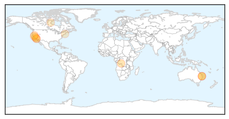

30 Day Trends
Web: 0 alerts, 0 warnings
Twitter: 0 alerts, 0 warnings
Top Articles:
- 0.926
- Measles alert at University of Queensland
- 0.908
- Brisbane measles alert after patient attends UQ St Lucia campus
- 0.897
- Over 287,000 children vaccinated for measles in the Democratic Republic of the Congo
- 0.869
- Warning about the dangers of measles may sway vaccine skeptics
- 0.858
- Officials hope to dispel fears with new law
- 0.850
- Back-to-school immunization vital to community
- 0.662
- How to convince skeptical parents that vaccines are safe
- 0.616
- New Law Making HPV Vaccine Mandatory for Kids Goes Too Far Even for Pro-Vaxxers
- 0.583
- Rights and Wrongs: The Ethics of Patient Demand
- 0.565
- Vaccinations have always been controversial in America
Top Tweets:
-
No tweets found for Aug 04, 2015
Web/News Articles

Tweets

Article Locations
Article Confidences